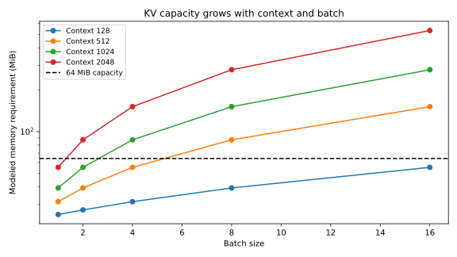

Chapter 9 · Architecture and software · 12–16 hours
AI workloads and memory placement
Which bytes must move before the next token can appear?
Suppose a new memory stores more bits per area and uses less energy per write. An inference server may still see almost no benefit if model weights are already resident in fast working memory and the critical operation is repeatedly reading them. To evaluate the research upward, identify the workload's actual read, write, capacity, and communication demands. To reason downward, derive those demands before selecting the device.
Prerequisites: Chapters 5–8, matrix multiplication. Objectives: distinguish prefill and decoding, derive weight and KV-memory demands, use a roofline bound, quantify batching and precision tradeoffs, and place ferroelectric storage or compute-in-memory on the correct path.
9.1 The relevant transformer computation
A transformer processes vectors called token embeddings. In attention, learned linear maps produce query, key, and value vectors. A query compares with stored keys to form weights, which combine the values. Additional linear and nonlinear layers transform the result. The lesson here is the data dependence: during autoregressive decoding, the next token depends on the previously generated sequence.
Prefill processes the input prompt and constructs its intermediate state. Many prompt tokens can participate in large matrix operations at once. Decoding generates subsequent tokens one step at a time for each sequence, often reusing cached keys and values from prior steps. The key–value cache, or KV cache, avoids recomputing all earlier attention projections; it consumes working-memory capacity and read bandwidth as context grows.
Time to first token includes waiting, prompt processing, scheduling, and the first output step. Inter-token latency measures the spacing between subsequent outputs for one request. Aggregate throughput counts tokens across requests per second. Increasing batch size may improve aggregate throughput while leaving an individual step slower or increasing queueing delay. These metrics cannot be substituted for each other.
9.2 Weight traffic and arithmetic intensity
Let $N_p$ be the number of active parameters used per generated token and $b_w$ bytes per stored weight. For a dense layer traversal, a first weight-capacity estimate is $M_w=N_pb_w$. At batch size $B$, reading a weight once and using it across the batch amortizes weight traffic to $M_w/B$ per output token, if the implementation achieves that reuse. Sparse or mixture-of-experts models require active-parameter and routing details rather than total advertised parameter count.
A matrix-vector multiplication performs approximately two floating-point operations per weight, counting multiplication and addition separately. The corresponding weight-only arithmetic intensity is $I\simeq2B/b_w$ operations per byte. This estimate excludes activations, KV traffic, metadata, and intermediate writes. It gives a direction for batching, not a complete profiler result.
Let peak compute rate be $F$ operations/s and sustainable memory bandwidth $\mathcal B$ bytes/s. If an operation performs $N_o$ operations and transfers $N_b$ bytes, its time is bounded below by both $N_o/F$ and $N_b/\mathcal B$. Hence $t\ge\max(N_o/F,N_b/\mathcal B)$, and attainable operation rate is at most $\min(F,\mathcal B I)$ with $I=N_o/N_b$. This is the central roofline relation. Williams, Waterman, and Patterson, original report.
The maximum assumes perfect overlap of compute and data movement. With no overlap, their times add. Actual kernels can fall below either bound because of synchronization, low occupancy, irregular access, dispatch overhead, or poor reuse. A device-level bandwidth improvement only helps when it raises the resource limiting the operation.
9.3 Derive KV-cache capacity
Let $L$ be the number of transformer layers, $H_{kv}$ the number of key/value heads, $d_h$ their vector dimension, $b_{kv}$ bytes per cached element, $S$ sequence length, and $B$ batch size. Storing both keys and values gives
The factor two is for key and value, not for read plus write. Grouped-query attention can have more query heads than KV heads, reducing this storage relative to a same-query-head multi-head design. Attention arithmetic, however, still depends on the query-head work; replacing query-head count with KV-head count indiscriminately understates operations.
Our hypothetical model uses 16 layers, four query and KV heads, head dimension 64, and two bytes per KV element. Each cached token per sequence consumes 16,384 bytes. At batch 16 and context 128, KV capacity is 33,554,432 bytes, or 32 MiB. The model has 16 million one-byte weights plus an assumed 8 MiB of runtime overhead, bringing total modeled capacity to 57,943,040 bytes.
KV allocation can waste memory through fragmentation, reservation, or redundant copies. PagedAttention addresses this management problem by storing cache blocks and sharing or allocating them more flexibly. Its improvements concern a serving-system design, not a new memory material. Such software improvements can change the value of additional physical capacity, so architecture and allocation policy belong in a fair device comparison. Kwon et al., PagedAttention.

9.4 Prefill and decoding stress different resources
For a prompt of $S$ tokens, a rough dense projection cost is $2N_pS$ operations. Standard full attention adds a quadratic term proportional to $L H_qd_hS^2$, where $H_q$ is query-head count. Optimized attention algorithms reduce intermediate-memory traffic without removing every arithmetic dependency. Prefill can therefore have higher weight reuse and become more compute-intensive than single-sequence decoding.
The precision project computes a teaching prefill lower bound for 128 tokens using $2N_pS+4LH_qd_hS^2$ operations. Dividing by the assumed 1 TFLOP/s compute rate gives a compute-only lower bound. It excludes queueing, communication, nonlinear operations, and implementation inefficiency, so it cannot be labeled measured time to first token.
For decoding, our scenario estimates dense work plus attention over the existing KV cache, and reads the weights plus that cache each step. It then takes the larger compute or memory time and adds a fixed 20 µs dispatch overhead. This is an interpretable first model. A real kernel trace is needed to determine overlap, cache hits, reuse, and memory transactions.
9.5 Numerical precision is a constrained choice
Reducing bytes per weight decreases storage and traffic. But quantization changes represented values, and analog compute-in-memory adds device variability, sensing errors, and converter limits. A fair efficiency comparison holds the required task accuracy constant. “Eight bits” can refer to storage, an analog level count, ADC output, or arithmetic accumulation; each has different error behavior.
For uniform rounding quantization with step $\Delta$, a non-saturated value has absolute error at most $\Delta/2$. Under an approximate uniform, uncorrelated error assumption, its variance is $\Delta^2/12$, obtained by integrating $e^2$ over $[-\Delta/2,\Delta/2]$. For a dot product $y=\sum_jw_jx_j$, independent zero-mean weight errors give output-error variance approximately $\sum_jx_j^2\operatorname{Var}(\delta w_j)$. Correlations and clipping invalidate that simple estimate.
The executable precision exercise quantizes a seeded random linear layer at several bit widths and measures relative output error. It selects the smallest representation meeting a 2% output-error constraint. This demonstrates constrained precision selection; it is not language-model perplexity, benchmark accuracy, or proof that one-byte weights preserve an actual model's quality. The main workload scenario assumes its numerical quality is acceptable and labels that assumption.
9.6 Where could Khan's research enter the path?
Ferroelectric NAND can target persistent model or dataset storage. It could reduce load time, storage energy, or increase capacity if the corresponding device, array, and controller requirements are met. Once weights are resident in working memory, a faster storage read may leave steady-state decoding unchanged. Storage near-compute proposals can instead reduce data movement by doing selected operations before data cross the storage interface, but require appropriate kernels and result fidelity.
FeFET or capacitive compute-in-memory can represent weights and perform part of a matrix operation. The potential advantage is avoiding repeated movement of weights. Costs include programming, converters, reference generation, peripheral area, finite precision, drift, and retraining or calibration. A demonstrated analog dot product is not yet a full transformer inference system; attention, nonlinearities, normalization, communication, and scheduling still need implementation.
The acquired 2026 NVIDIA-related papers concern modeling workflows and surrogates. Their corporate affiliations and use of PhysicsNeMo establish a research relationship. They do not establish that a shipping NVIDIA accelerator uses these ferroelectric memories. That distinction prevents a scientifically plausible route from becoming an invented deployment claim. Agentic TCAD affiliations; retention surrogate.
9.7 Derive the bytes from the attention computation
Keep the running hypothetical model fixed while opening one attention head. For a sequence of $S$ tokens, let query, key, and value matrices be $Q,K,V\in\mathbb R^{S\times d_h}$. The row for one token contains $d_h$ real components. Scaled dot-product attention forms scores $A=QK^T/\sqrt{d_h}$, applies a rowwise softmax after a causal mask, then multiplies by $V$. The mask prevents a token from attending to future tokens. Softmax exponentiates each permitted score and normalizes the row to sum to one.
During one decoding step, only the new query row is needed for the new output. It compares with $S$ stored keys, requiring roughly $2Sd_h$ multiply-add operations under the convention of two operations per multiply-add. Combining the resulting weights with $S$ values adds another $2Sd_h$. Thus the attention matrix operations cost roughly $4Sd_h$ per query head per layer per sequence. The cache stores keys and values because they are reused; it does not eliminate reading them for later queries.
Across $L$ layers, $H_q$ query heads, and batch $B$, this gives $4LH_qd_hSB$ operations per decode step. KV bytes instead depend on $H_{kv}$, the number of distinct key/value heads: $2LH_{kv}d_hb_{kv}SB$. If several query heads share one KV head, storage decreases while query-side arithmetic still follows $H_q$. This algebra explains why a grouped-query design can move the memory–compute balance without changing the physical memory. The running model sets both head counts to four to avoid silently mixing those cases.
The cache also grows after every emitted token. One step appends $2LH_{kv}d_hb_{kv}B$ bytes. Those writes are smaller than reading the full cache for a long context but matter for endurance and sustained capacity. A fixed-context snapshot is not a complete request: after many generated tokens, the request may cross a capacity or latency boundary. A serving study must specify whether context length means prompt length, current total length, or maximum allowed length.
9.8 Batching changes both reuse and demand
At fixed context 128, the cumulative model predicts step times of 0.246214, 0.272429, 0.324858, 0.429715, and 0.639430 ms for batches 1, 2, 4, 8, and 16. Corresponding aggregate rates rise from about 4,062 to 25,022 tokens/s. These values are independently recorded in the depth-laboratory sweep. They show why throughput and individual step latency need separate axes: the larger batch serves more sequences together but each sequence waits longer for that step.
Weight traffic per step is fixed at 16 million bytes in the model, while KV traffic grows with batch. Let $c$ be KV bytes per sequence at the fixed context, so total traffic is $M_w+cB$. Let $a$ be operations per sequence, so work is $aB$. Arithmetic intensity is $I(B)=aB/(M_w+cB)$. Differentiating gives $I'(B)=aM_w/(M_w+cB)^2\gt0$, but its limit is $a/c$ rather than infinity. Batching amortizes weights; it cannot amortize distinct per-sequence KV state in the same way.
For our parameters, the intensity rises from 1.884 to 11.009 operations/byte across the tested batches. The machine balance is 12.5 operations/byte, so all five remain memory-bound in this simplified model. Increasing batch indefinitely is forbidden by capacity and would eventually change latency and queueing. A throughput optimizer that ignores those constraints can claim a batch that cannot reside in memory or cannot meet the response requirement.
A strict capacity limit also determines maximum continuation length. After weights and 8 MiB overhead, available KV space is $$67{,}108{,}864-16{,}000{,}000-8{,}388{,}608=42{,}720{,}256$$ bytes. At batch 16 the cache grows by 262,144 bytes per token position, so the ideal integer context ceiling is 162 tokens. A batch starting at 128 therefore has room for only 34 further positions under this simplified allocation, before additional overhead or fragmentation. Reporting the attractive initial step without this horizon would conceal a serious capacity limit.
Continuous batching can admit new requests when others finish, reducing wasted slots. It also changes the distribution of sequence lengths within a batch. A single common $S$ then becomes a conservative maximum or an approximation to the sum of actual lengths. The PagedAttention paper addresses cache allocation and sharing in serving. Its relevance here is that logical cache use and physical allocation are different, so a device-capacity comparison must state the allocator policy.
9.9 Time to first token is a scheduling outcome
A request first waits for admission, then its prompt is processed, then the first output step completes. A useful decomposition is $$T_{\rm first}=T_{\rm queue}+T_{\rm prefill}+T_{\rm first-step}+T_{\rm overhead}$$, with nonoverlapping terms defined by a trace. Subsequent inter-token intervals can include waiting behind other work as well as decode service. A compute-only prefill estimate is therefore a lower bound on one component, not a measured user latency.
Prefill performs dense projections for many prompt tokens, making weight reuse larger than in single-sequence decoding. Standard attention also performs work proportional to sequence length squared. The triangular causal mask changes the exact operation count, and optimized kernels can avoid materializing the full score matrix. Our $4LH_qd_hS^2$ attention estimate is a deliberately simple dense bound, not an exact kernel count. A fair profiler comparison needs the actual algorithm, tensor shapes, precision, and implementation.
A long prefill job can delay latency-sensitive decode steps if both share the same execution resource. Chunking the prompt can interleave work and improve responsiveness, at the cost of scheduling overhead and potentially different utilization. Separating prefill and decode resources changes communication and KV-transfer costs. These serving choices can dominate a small memory-device latency improvement. The system chapter therefore treats queueing as a distinct model rather than attaching utilization to a single kernel time without explanation.
Training adds further memory demands. Parameters may need gradients and optimizer states, while activations must be retained or recomputed for backpropagation. If an optimizer maintains two additional full-precision arrays, the optimizer footprint alone can exceed low-precision inference weights many times over. Activation checkpointing trades recomputation for storage. A nonvolatile write advantage is relevant only after the frequency and granularity of these updates are specified; training's repeated writes can be more demanding than storing a largely static inference model.
9.10 Propagate numerical error through a linear layer
Let a linear layer output be $y=Wx$, with weight matrix $W\in\mathbb R^{m\times n}$ and input vector $x\in\mathbb R^n$. Quantization replaces $W$ by $\widehat W=W+E$, where $E$ is the weight-error matrix. The output error is exactly $\delta y=Ex$. By the operator-norm inequality, $\|\delta y\|_2\le\|E\|_2\|x\|_2\le\|E\|_F\|x\|_2$, where $\|E\|_F$ is the square root of the sum of squared entries. This deterministic bound requires no independent-noise assumption.
If uniform rounding without clipping gives $|E_{ij}|\le\Delta/2$, then $\|E\|_F\le\sqrt{mn}\Delta/2$. The resulting bound is conservative because it permits all errors to align with the input. Under independent zero-mean errors, the expected squared output error is instead $(m\Delta^2/12)\|x\|_2^2$. The different dependence reflects different assumptions about alignment. A measured error smaller than the worst-case bound does not invalidate the bound; the bound protects against directions not represented by that measurement.
Relative error divides by $\|Wx\|_2$. If the true output is near zero because of cancellation, a small absolute error can produce a large relative value. A single relative-norm criterion therefore needs context. For a language model, local linear error is only one stage: normalization, nonlinearities, residual paths, and token selection can amplify or suppress perturbations. Task accuracy must be evaluated on representative data rather than inferred from the bit width alone.
The existing precision project selects eight bits for its seeded random linear-layer example under a 2% output-error constraint, with observed relative error about 0.00837. That result is reproducible for those matrices and inputs. It does not establish eight-bit quality for a specific transformer or analog array. A useful extension tests inputs aligned with the largest-error singular vector, clipped outliers, and correlated row errors. These interventions test assumptions the random baseline is unlikely to stress.
9.11 Map a dot product into a physical memory and count the missing work
For a conductance crossbar, an ideal row voltage $v_j$ and cell conductance $G_{ij}$ produce column current $I_i=\sum_jG_{ij}v_j$ by Ohm's law and Kirchhoff's current law. This realizes an analog weighted sum if conductance is independent of voltage over the operating range and wires have negligible voltage drop. A signed numerical weight generally requires a reference or differential encoding because conductance is nonnegative. For example, represent $w_{ij}$ by a scaled difference $G_{ij}^+-G_{ij}^-$ and subtract the two column currents.
Differential encoding consumes two physical contributions and introduces matching requirements. Inputs need conversion to voltages or pulse durations; outputs need sensing and often analog-to-digital conversion. Large matrices must be tiled, and partial sums combined with sufficient precision. Conductance drift, line resistance, nonlinear current, and converter saturation change the arithmetic. A measured cell state is therefore only one ingredient in a numerical computing primitive.
Let $N_o$ useful operations be performed per array invocation. Write energy per useful operation as $$(E_{\rm array}+E_{\rm input}+E_{\rm output}+E_{\rm accumulate}+E_{\rm control})/N_o$$. Programming and calibration can be amortized by adding $(E_{\rm program}+E_{\rm calibrate})/N_{\rm lifetime-ops}$, where the denominator counts operations before reprogramming or recalibration. If weights change frequently, that amortization becomes less favorable. If most rows or columns are unused, the useful-operation denominator shrinks even when peripheral energy remains.
A ferroelectric capacitor or FeFET array may use a different physical multiply mechanism from a resistive crossbar; the conductance equation is a comparison model, not a claim that all ferroelectric compute-in-memory operates this way. Read the architecture review for the actual sensing and organization being proposed. The scientific test is whether the complete primitive implements the required numerical operation at the required accuracy and utilization. A cell-level energy per switch cannot supply the converter, tiling, or accumulation terms.
9.12 Match the research claim to the workload boundary
Consider three distinct proposals. Persistent ferroelectric storage can affect loading a model from storage into working memory. A denser working-memory macro can affect the largest batch or context that fits. Compute-in-memory can affect repeated weight movement during arithmetic. These interventions act on different terms, so they need different benchmarks. The first should report model-load or checkpoint behavior; the second capacity-constrained serving; the third complete operator and model quality with all conversion overhead.
The acquired agentic calibration and retention-surrogate papers connect AI methods to device modeling. Their use of an AI workflow does not mean the modeled device has been installed inside an AI accelerator. The direction of the contribution is initially AI assisting device research. To argue for the reverse direction—devices accelerating AI—one must add circuit, architecture, workload, and system evidence. Keeping these directions separate makes the research connection more precise.
A useful downward specification states useful capacity after redundancy, read and write traffic by operation, maximum service and tail latency, allowed numerical error, temperature, and expected lifetime access count. Only then ask whether a candidate ferroelectric architecture can meet it. This approach may identify a valuable storage role even when active KV memory is unsuitable, or a specialized matrix role even when general-purpose memory is unsuitable. The decision follows the contract rather than a universal technology ranking.
1. Find the capacity-limited continuation horizon
Use the running batch of 16 and the 64 MiB capacity. Why is an initial 128-token benchmark insufficient to claim support for 128 additional generated tokens?
Solution. Available cache space is 42,720,256 bytes and each additional position across the batch consumes 262,144 bytes. The integer ceiling is 162 positions, leaving only 34 beyond the starting 128. Generating 128 more would reach 256 and exceed the capacity before accounting for extra runtime buffers. The benchmark must either reduce batch, increase capacity, evict/offload state, or change the workload. Each remedy has a performance cost that belongs in the comparison.
2. Explain a grouped-query counting error
A model has 16 query heads and four KV heads. Relative to 16 KV heads, what changes in cache storage and what does not follow for attention arithmetic?
Solution. At the same layers, dimension, precision, batch, and context, cache storage falls to one quarter. Each of the 16 query heads still computes attention against its assigned keys and values, so the simple query-side operation count does not fall by four merely because storage did. Kernel reuse and data movement may improve, but must be analyzed separately. Substituting KV-head count into every formula confuses representation with computation.
3. Construct a fair compute-in-memory comparison
A prototype reports low energy per analog dot product but requires frequent recalibration. What must be included before comparing it with digital inference?
Solution. Include input/output conversion, tiling and partial sums, control, programming, recalibration frequency, data movement outside the array, and the achieved model quality. Amortize fixed costs over actual useful operations between updates. Match batch and context and count unused array capacity. Report the measured primitive separately from any extrapolated full-model result. A favorable local operation remains valuable evidence, but it cannot establish an end-to-end gain by itself.
9.13 A memory hierarchy has several bandwidth ceilings
The single roofline uses one byte count and one bandwidth, but an actual kernel can move different amounts through registers, local cache, accelerator memory, host memory, and storage. For boundary $j$, let $M_j$ be bytes crossing that boundary and $\mathcal B_j$ its sustainable bandwidth. A lower bound on execution time is $t\ge\max[N_o/F,M_1/\mathcal B_1,M_2/\mathcal B_2,\ldots]$ when the corresponding stages can overlap. If dependencies serialize them, the bound is weaker than a schedule-based sum.
The byte counts differ because reuse can occur between boundaries. A weight may be loaded once from storage, once into accelerator memory, and many times from that memory into on-chip resources. A faster storage device changes the first boundary, while a larger on-chip cache changes the number of crossings at a later boundary. A claim that “memory bandwidth improved” is incomplete until it names the boundary and the traffic that crosses it.
For a matrix multiplication $C=AB$, blocking keeps tiles of $A$ and $B$ close to arithmetic while producing a tile of $C$. Increasing tile reuse can raise arithmetic intensity without any new memory hardware. The tile must fit available fast storage, and registers and shared resources can limit occupancy. A new memory architecture is most valuable when it changes a binding capacity or movement constraint that software cannot already remove cheaply. Compare against a competent blocked implementation, not an intentionally naive one.
At the running model's batch 16 and context 128, the shared 80 GB/s interface remains tighter than the estimated aggregate internal-bank bandwidth. Doubling internal-bank bandwidth therefore changes no modeled step time. Doubling the shared interface can help until compute or another boundary becomes limiting. The correct update is to recompute all lower bounds and choose the new maximum, not multiply old throughput by the local bandwidth factor.
4. Re-evaluate a doubled interface
For the running batch, use 545,554,432 operations and 49,554,432 transferred bytes per step. What does doubling the 80 GB/s interface do under the same perfect-overlap model and 20 µs overhead?
Solution. Compute time is 0.545554432 ms. Memory time falls from 0.6194304 ms to 0.3097152 ms. The new step time is therefore $0.545554432+0.020=0.565554432$ ms, giving about 28,291 tokens/s. The baseline is 0.6394304 ms, so the step-time speedup is only about 1.131, not two. Compute becomes the limiting resource. These numbers remain synthetic model outputs, not measured accelerator performance.
9.14 Optimize batching under a capacity ceiling
Run python -X utf8 projects/stack.py workload after the array stage. It imports the selected array's energy per byte and capacity, then caps bandwidth at an assumed 80 GB/s interface. It enumerates batches 1, 2, 4, 8, 16 and contexts 128, 512, 1,024, 2,048. Feasibility requires capacity at most 64 MiB and step latency at most 5 ms. The selected scenario maximizes throughput over that finite set.
The computed best case is batch 16 at context 128: approximately 0.63943 ms per step and 25,022 tokens/s in this hypothetical workload. That result is a model output, not an accelerator benchmark. Longer contexts can make otherwise attractive batches infeasible through KV capacity. An optimizer that ignores capacity can therefore produce a numerically impressive but impossible choice.
For a fixed user context, optimize batch only within that context. Choosing a shorter context can change the task being performed, so the global sweep's best point must not be presented as a fair speedup over a longer-context workload. The capstone keeps these scenario differences explicit.
9.15 Exercises and solutions
5. KV memory growth
In the teaching model, how much KV memory does one sequence need at context 2,048?
Solution. Multiply 16,384 bytes/token by 2,048 tokens: 33,554,432 bytes, or 32 MiB. Sixteen such sequences require 512 MiB, already exceeding the 64 MiB scenario before weights and overhead.
6. Roofline crossover
If compute is 1 TFLOP/s and bandwidth 80 GB/s, what intensity reaches the compute roof?
Solution. $I_*=F/\mathcal B=12.5$ FLOP/byte. Below this, the bandwidth bound is tighter; above it, peak compute is tighter. Actual performance may still fall below both roofs.
7. A storage improvement with no decoding gain
All weights and KV state remain in working memory during decoding. Storage becomes ten times faster. What is the predicted steady-state decoding speedup under these assumptions?
Solution. One. Storage is absent from the modeled decoding critical path. Initial model loading or fault recovery may improve; those are different metrics. To change steady-state decoding, demonstrate a changed data path or working-memory bottleneck.
8. Accuracy-preserving comparison
Can a four-bit analog array be compared directly with sixteen-bit digital inference using only energy per multiply?
Solution. No. Match model quality, accumulation precision, conversion overhead, programming/calibration costs, and complete workload. Quantization or analog errors can change the useful output. The precision project supplies a small reproducible example of enforcing an error constraint before optimizing storage.
You can now identify which memory property a workload actually needs and which local improvements lie outside its critical path. Chapter 10 completes the accounting at server and facility scale.